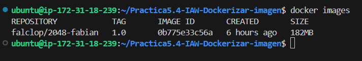
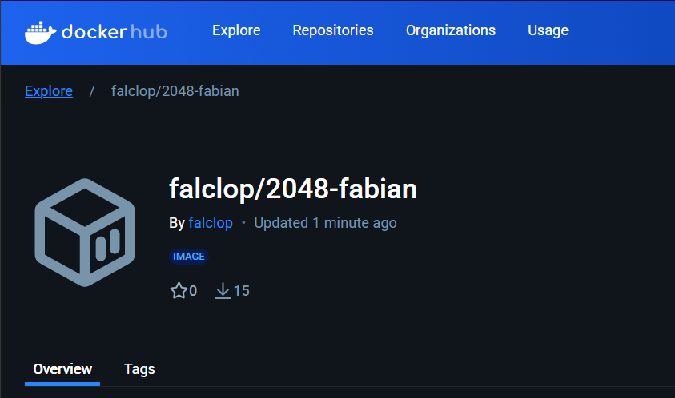

Practica5.4-IAW-Dockerizar-imagen#
Creación de imagen dockerizada de un servicio y subirlo a DockerHub.
Explicación de la práctica#
En esta práctica vamos a implementar la creación de un docker con un web estática, el juego del 2048, usando la tecnología docker compose.
Los pasos a seguir serán los siguientes:
- Crear un Dockerfile.
- Crear una imagen de docker con Docker Buildx.
- Crear el docker-compose.yml para despliegue de imagen.
- Despliegue de aplicación y comprobación.
- Subir imagen a docker hub, podemos verla aquí.
- Creación de GitHub Actions para implementar CI/CD.
Desarrollo de la aplicación#
- Dockerfile
Un Dockerfile es un archivo que contiene las instrucciones para la creación de una imagen de docker. Esta se compone de varias partes, que pueden ser reutilizables y hacen que se comporte de diferentes formas: - El FROM hace referencia a la imagen desde la que comienza, en este caso un ubuntu 24.04.
FROM ubuntu:24.04 - Las LABEL introducen metadatos para trazabilidad y seguimiento del proyecto.
LABEL AUTHOR="Fabián Alcaide" LABEL DESCRIPTION="Imagen de web 2028" - El RUN es de lo más importante del Dockerfile, pues contiene los comandos que se ejecutarán al inicio del contenedor, en este caso:
- Instalación de nginx.
- Instalación de git.
- Borrado de dependencias.
- Clonado de repositorio necesario.
- Copia de archivos a directorio virtual.
RUN apt update && \ apt install nginx -y && \ apt install git -y && \ rm -rf /var/lib/apt/lists/* RUN git clone https://github.com/josejuansanchez/2048 /app && \ mv /app/* /var/www/html
- EXPOSE abre los puertos designados (recordemos que hay que abrir los puertos en la máquina anfitrión).
EXPOSE 80 - CMD permite ejecutar comandos como si fuese la consola.
CMD [ "nginx", "-g", "daemon off;" ] - Una vez tenemos el Dockerfile listo, usamos el comando:
Este comando permite poner nombre (tag), versión y localización del dockerfile. Le ponemos nuestro nombre a la imagen para poder subirlo como imagen en DockerHub como no oficial.
docker build -t falclop/2048-fabian:1.0 .
Una vez lanzamos el script, vemos nuestra imagen con Docker images

- Una vez tenemos las imagen, preparamos el docker-compose.yml
Lo lanzamos con:services: 2048-fabian: image: falclop/2048-fabian:1.0 ports: - 8081:80docker compose up -d

Y como hemos hecho un port-forwarding al 8081:80 entramos a la ip o al nombre del dominio y veremos la aplicación.

- Cuando tenemos listo la imagen, la instalación es correcta y funciona todo, podemos subir la imagen a nuestra cuenta de DockerHub, para ello primero haremos:
docker login
Con esto podemos loguearnos en dockerhub para subirlo y poder hacer un push.
docker push falclop/2048-fabian:1
Con esto subimos la imagen a dockerhub

- Finalmente, vamos a crear un disparador en GitHub Actions para poder crear una automatización de CI/CD (Integración y Despliegue continuo). Para ello dentro de nuestro repositorio entramos en Actions y el botón New Workflow.
Nos creará una carpeta oculta en el que meter los diferentes disparadores, el nuestro será el siguiente:
name: Publish image to Docker Hub
# This workflow uses actions that are not certified by GitHub.
# They are provided by a third-party and are governed by
# separate terms of service, privacy policy, and support
# documentation.
on:
push:
branches: [ "main" ]
# Publish semver tags as releases.
tags: [ 'v*.*.*' ]
workflow_dispatch:
env:
# Use docker.io for Docker Hub if empty
REGISTRY: docker.io
# github.repository as <account>/<repo>
#IMAGE_NAME: ${{ github.repository }}
IMAGE_NAME: 2048-fabian
IMAGE_TAG: latest
jobs:
build:
runs-on: ubuntu-latest
permissions:
contents: read
packages: write
steps:
- name: Checkout repository
uses: actions/checkout@v3
# Set up BuildKit Docker container builder to be able to build
# multi-platform images and export cache
# https://github.com/docker/setup-buildx-action
- name: Set up Docker Buildx
uses: docker/setup-buildx-action@f95db51fddba0c2d1ec667646a06c2ce06100226 # v3.0.0
# Login against a Docker registry except on PR
# https://github.com/docker/login-action
- name: Log into registry ${{ env.REGISTRY }}
uses: docker/login-action@343f7c4344506bcbf9b4de18042ae17996df046d # v3.0.0
with:
registry: ${{ env.REGISTRY }}
username: ${{ secrets.DOCKERHUB_USER }}
password: ${{ secrets.DOCKERHUB_TOKEN }}
# This action can be used to check the content of the variables
- name: Debug
run: |
echo "github.repository: ${{ github.repository }}"
echo "env.REGISTRY: ${{ env.REGISTRY }}"
echo "github.sha: ${{ github.sha }}"
echo "env.IMAGE_NAME: ${{ env.IMAGE_NAME }}"
# Build and push Docker image with Buildx (don't push on PR)
# https://github.com/docker/build-push-action
- name: Build and push Docker image
id: build-and-push
uses: docker/build-push-action@0565240e2d4ab88bba5387d719585280857ece09 # v5.0.0
with:
context: .
push: ${{ github.event_name != 'pull_request' }}
tags: ${{ env.REGISTRY }}/${{ secrets.DOCKERHUB_USER }}/${{ env.IMAGE_NAME }}:${{ env.IMAGE_TAG }}
cache-from: type=gha
cache-to: type=gha,mode=max
Primero se hace el push.

Y a continuación salta el trigger y se sube a DockerHub